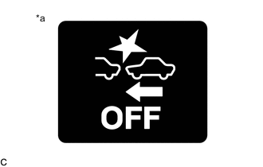

CHECK PRE-CRASH SAFETY SYSTEM SETTING
Turn the power switch on (IG).
Operate the steering pad switch assembly to change the setting of PCS on the multi-information display to "On" and check that the pre-crash safety system turns on.
Tech Tips
When the power switch is turned on (IG), the PCS will turn on. This can be changed through a customize setting using the GTS.

| *a | PCS Warning Light |
Operate the steering pad switch assembly to change the PCS setting to "Off" and check that the PCS warning light illuminates.
CHECK PRE-CRASH SAFETY SYSTEM SENSITIVITY SETTING
Turn the power switch on (IG).
Operate the steering pad switch assembly to select Change PCS Sensitivity and check that the warning timing adjustment display on the multi-information display changes between "Far", "Mid" and "Near" accordingly.
Tech Tips
The pre-crash safety system warning timing status remains unchanged when the power switch is turned off and back to on (IG). This can be changed through a customize setting using the GTS.
The default setting is "Mid".